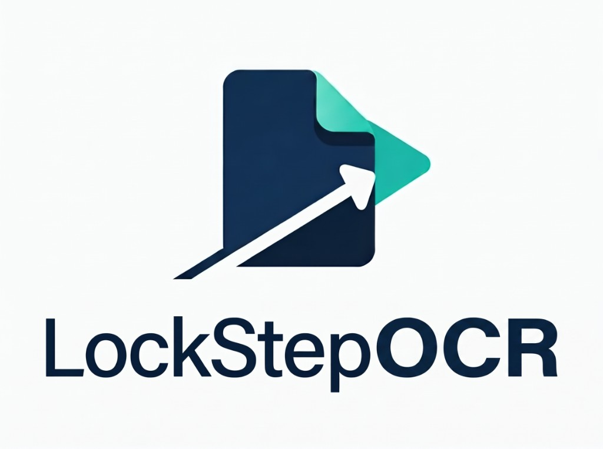

Separate watch folder, output folder, prefix, original name, and suffix. The build shown here defaults the prefix to Searchable_OCR_. Output is a searchable PDF. The source file remains in the watch folder. Page size is unchanged.

Night shift
LockStep Tools · version 2.4
Unlimited OCR engines. All at once.
Put the scans to bed. We’ll take the night shift. Each engine has a watch folder and an output folder. Output is a searchable PDF at the original page size. The source file is not deleted. There is no cap on how many run together.
The engine
One master switch. Unlimited engines.
Start as many OCR engines as the night’s work needs. Each has a watch folder, an output folder, a file name, and a post-process action. They run at the same time. Output is a searchable PDF at the original page size. The source file is not deleted.
Runs while the other pipelines run. Separate watch folder, output folder, prefix, original name, and suffix, so the rename rule does not collide with pipeline 1.
Another engine on the same night. Separate watch folder and output folder. Same output: searchable PDF, original page size, source file left in the watch folder. There is no third-engine ceiling. Add another and it runs with the rest.
| Watch folder | Folder the engine watches for a scan or a flat PDF. LockStepPDF does not need to be open. |
|---|---|
| Output folder | Where the searchable PDF is written. Originals stay in the watch folder. |
| File name | A prefix, the original name, and a suffix, then .pdf. The build shown here defaults the prefix to Searchable_OCR_. |
| Page size | The new file keeps the page size of the art. OCR is a text layer, not a reflow. |
| After processing | Post-process action when the file is written. “Do nothing” leaves the PDF in the output folder. |
LockStepOCR on the desk
This window shows pipeline tabs side by side. Each has a watch folder and an output folder. The product is not capped at the tabs in the picture. Run as many OCR engines as the shop starts, at once.

Standalone installer and LockStepPDF folders
LockStepOCR is the free standalone installer. LockStepPDF runs the same unlimited OCR engines beside its Automation engines. A file there becomes a searchable PDF at the original page size. The text is selectable. The job is not imposed.
Input
Scan or flat PDF with no text layer: a flattened proof, a form, a previous job. The pipeline writes a searchable PDF at the original page size for prepress or archive.
Download LockStepOCR 2.4
Free. Windows setup file. No account.
The installer link is not posted yet.